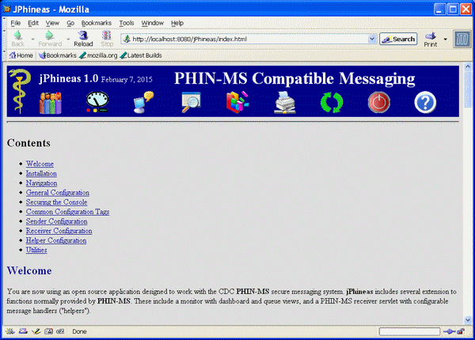
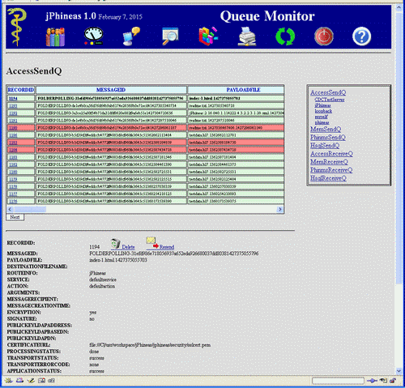
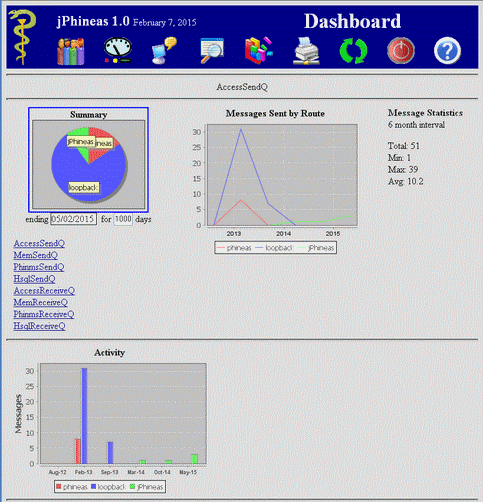
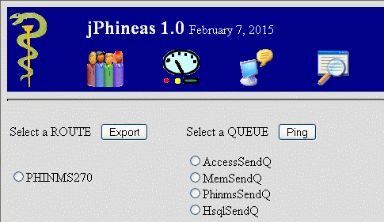
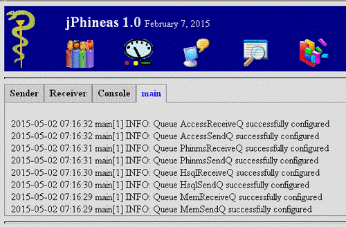
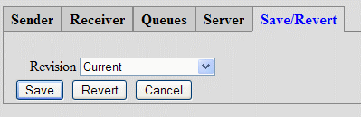
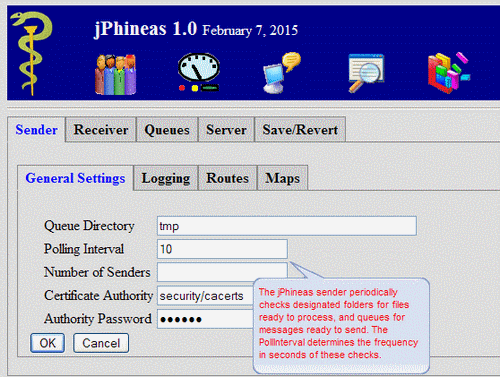
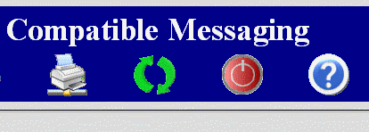

Contents
You are now using an open source application designed to
work with the CDC PHIN-MS secure messaging system.
jPhineas includes several extension to functions
normally provided by PHIN-MS. These include a
monitor with dashboard and queue views, and a PHIN-MS
receiver servlet with configurable message handlers
("helpers").
If you received a ZIP file, unzip it to a folder of your
choice. In it you should find a jphineas folder and
jphineas.war. The folder contains the base
configuration files. Use a zip editor to modify
WEB-INF/web.xml in jphineas.war (I like
7Zip). Change the <param-value> of the
<:context-param> from
/jphineas/config/jPhineas.xml to include the full paths to
the jphineas/config folder. For example, if you
unpacked the zip to C:\usr then...
<param-value>/jphineas/config/jPhineas.xml</param-value>
would be changed to...
<param-value>C:/usr/jphineas/config/jPhineas.xml</param-value>
You can run jPhineas from any J2EE web application
server that includes JSP support (Tomcat is the common
platform). If your server is configured to auto-deploy
WAR files simply copy or move jphineas.war to
the server's web applications folder. Otherwise you can
unzip to to the same location.
If the installation was succesful, you can access
jPhineas from your browser. The domain and port for
the URL will vary depending on your configuration, but the
path will be /jphineas. For a bone stock jPhineas
where you are browsing from the jPhineas server running at
port 80 the URL would be:
http://localhost/jphineas
You will need to adjust this depending on where you are
browsing from and other details like proxies, port numbers, etc.
If the installation was successful you will see the jPhineas
help page.

The top of each console page includes a set of navigation icons.
These are used to select various parts of the jPhineas console,
or to perform common actions (like refreshing the console).
 Queue Monitor -
comprehensive details for jPhineas message queues. It consists
of three sections. On the right you will find a list of
queues and either (sender) routes or (received) party
ID's constraints for the selected queue. Click on any
of these links to modify the displayed rows. Queue Monitor -
comprehensive details for jPhineas message queues. It consists
of three sections. On the right you will find a list of
queues and either (sender) routes or (received) party
ID's constraints for the selected queue. Click on any
of these links to modify the displayed rows.
On the left side is a table of rows for the selected
queue and (optional) constraint. Each row provides
complete details about that item. Use the scroll bar
to view undisplayed fields. Below the table there
may be Next and/or Previous buttons
that can be used to display additional rows.
The bottom section contains details about the row
selected from the record table described above.
Selection is made by the RECORDID. There is
also a Delete button to remove the displayed
record and a Resend button to attempt re-sending
failed message when appropriate.
|

|
|
Dashboard -
an overview of jPhineas activity and status.
The Dashboard includes a pie chart, line and bar
graphs, and statistics. You can "drill down" to
specific data using the pie chart.
Clicking on any section of the pie chart produces
specifics for that route or party ID (depending on
queue).
Under the pie chart you may select an ending date for
the display (using the drop down calendar)
and the number of days to include in the
charts and statistics. Below that you may select the
queue of interest.
|

|
 CPA Export/Ping -
Here you may export a Route CPA, or send an ebXML (PHIN-MS
style) Ping. The selected queue will be used to register
the Ping and its acknowledgment. CPA Export/Ping -
Here you may export a Route CPA, or send an ebXML (PHIN-MS
style) Ping. The selected queue will be used to register
the Ping and its acknowledgment.
|

|
 Logs -
shows logged events. Each log has its own tab,
and is shown in chronological order starting with the
newest entry. Only the most recent entries are shown.
Refer to the disk logs for complete listings. Logs -
shows logged events. Each log has its own tab,
and is shown in chronological order starting with the
newest entry. Only the most recent entries are shown.
Refer to the disk logs for complete listings.
|

|
 Configure -
the configuration page. Configuration consists of a set
of tabs and inputs. Instant "bubble help" is produced
by hovering the mouse over the item of interest. Configure -
the configuration page. Configuration consists of a set
of tabs and inputs. Instant "bubble help" is produced
by hovering the mouse over the item of interest.
Each tab includes an OK button. You must
click OK in order for any change to that tab to
be noted. Once a button is clicked on any tab, or you
navigate away from the Configure page, any other
changes will be lost.
The Save/Revert tab allows you to save the current
configuration, or revert the current configuration to a previously
saved version. However, changes do not take effect until
a Restart (see below).

|

|
 Print - prints the current page. This is the same action as your
browser print function.
Print - prints the current page. This is the same action as your
browser print function.
 Refresh -
refreshes the page. This is the same action as your
browser refresh. Refresh -
refreshes the page. This is the same action as your
browser refresh.
 Restart - reloads the current configuration and restarts
jPhineas. After saving a change to the configuration
you must restart jPhineas for it to take effect.
Restart - reloads the current configuration and restarts
jPhineas. After saving a change to the configuration
you must restart jPhineas for it to take effect.
 Help - shows the help
page (this page!). Help - shows the help
page (this page!).
|

|
JPhineas is typically configured from the console, but you
may optionally edit configuration files directly. Any
changes require a Restart of the application before they
will take effect. Configuration details can be found below.
The configuration console provides a "three phase" approach
to the system behavior. Initially is shows the "running"
configuration. To make changes, select the tab(s) of
interest and modify values as needed. If you click the OK
button for a tab, your modifications to that tab are noted.
Otherwise they will be (eventually) discarded.
Modifications that have been noted can be saved or reverted
to previous values from the Save/Revert tab. When you
save modifications a revision is created and the "running"
configuration updated. When you revert modifications, the
"running" configuration is changed to the selected revision.
Neither operation has an effect until the next Restart.
JPhineas is configured from five XML files,
typically located in a config directory. File and
directory references from within a given configuration file
will be made relative to its <DefaultDirectory>,
which in turn defaults to the parent of the directory holding
the configuration (see below).
Passwords appear in clear text in configuration files, so configurations
should be protected at the file system level. Given that PHIN-MS
typically carries PHI, the same security constraints provided to
payloads should normally be applied to configurations as well (typically
storage behind a PCI buss with limited access). Future provisions
will be made to encrypt configurations, but keep in mind that at some
level a clear text password (e.g. for the configuration encryption)
will necessarily exist and need to be similarly secured. In PHIN-MS
this is done by a simple substitution cipher that is easily broken,
so PHIN-MS configurations have the same security issues.
- jPhineas.xml - the primary configuration file specified in
web.xml and used by all parts of jPhineas. This references
the remaining configurations below.
- Queues.xml - persistence including queue types, names,
and connection details.
- Sender.xml - sender general details, routes, and folder
maps
- Receiver.xml - receiver general details and
service/action maps
- Console.xml - console queues and links to other
configurations
A typical directory tree for (non-web application) files
used by jPhineas looks like:
jphineas/ - the root
config/ - configurations
CPA/ - receiver CPA's
revisions/ - previous configurations
jPhineas.xml
Sender.xml
Receiver.xml
Queues.xml
Console.xml
CPA/ - exported Route CPA
data/ - payload files
incoming/ - received payloads
ack/ - outgoing acknowledgements
outgoing/ - outgoing payload files
processed/ - outgoing payloads that are queued
queues/ - files associated with the queue database
security/ - certificates used by jPhineas
replies/ - a cache of receiver responses to requests
tmp/ - temporary files
To secure jPhineas you will need to modify
jphineas/WEB-INF/web.xml (see installation above).
Add (uncomment) the following to the end of web.xml
just before the final </web-app> tag. Note
that you will need to configure the appropriate application
server Realm with the appropriate users and roles.
<security-constraint>
<web-resource-collection>
<web-resource-name>The Entire console Application</web-resource-name>
<url-pattern>*.jsp</url-pattern>
<url-pattern>*.html</url-pattern>
</web-resource-collection>
<auth-constraint>
<role-name>consoleadmin</role-name>
</auth-constraint>
</security-constraint>
<login-config>
<auth-method>BASIC</auth-method>
<realm-name>JPhineas</realm-name>
</login-config>
<security-role>
<description>A role defined for JPhineas console app.</description>
<role-name>consoleadmin</role-name>
</security-role>
Remember you will need to Restart your application server
for updates to take effect.
Common (shared) configuration tags unique to
jPhineas include:
-
<HostId> - the Party ID for this server
-
<Domain> - the domain for this server
-
<Organization> - name associated with this
server
-
<Log> - logging subsection
-
<LogName> - full path to the log file
-
<LogLevel> - ERROR, WARN, INFO, or DEBUG
-
<LogLocal> - true if source file
locations are desired
-
<Name> - the name associated with any
subsection
-
<Service> - the service
-
<Action> - the action for a service
-
<Processor> - a Java class to handle message
specific processing
-
<Queue> - the name of the queue
-
<Id> - a user identifier for security
purposes
-
<Password> - a password for security
purposes
-
<Unc> - a file or web URL path
You will normally not need to change any of the General Settings
or Logging. However there are two key configurations needed to
send a file (payload):
- Route - this describes the internet connection that
will be made to a specific destination. It is typically
a Web URL that can include authentication credentials.
The Route identifies the destinations Party ID
and must be Exported and delivered to the destination
(using email or some alternative method) before communications
can occur. You can think of the Route as a "telephone number"
- Map - this specifies the Route, the source
(directory) for files, the Queue for monitoring,
the encryption used, and the Service/Action. If
you think of the Route as a telephone number, then
the Service/Action is the extension used to reach
a specific person.
The Map also indicates where files should go once they
have been added to a queue, and where replies get stored. They
may optionally specifiy Arguments and/or a Recipient.
These may be required by the Route destination for
additional processing.
As with the Sender, you will normally not need to modify
the default General Settings or Logging. You do
need to make sure to save sender (client) CPA files to the
CPA Directory.
You probably want to create additional Services. The
standard default and Ping services are predefined. Unlike
PHIN-MS, each service can include a unique Directory
to receive payload files. This makes routing payloads
convienient. Likewise, each service can have its own unique
decryption parameters. That allows you to optionally provide
senders separate encryhption keys for each service.
jPhineas comes pre-configured for a file based HSQLDB
set of queues. In most cases, you can plug in one or more
existing PHIN-MS databases if you like, as the default configuration is
more or less compatible. However, there is no support
for CLOB/BLOB objects (binary or large text) which means you can
not store payloads in a jPhineas queue. That feature will
likely be added in the future.
Queue configuration consists of three components:
- Queue - a queue is simply a table used to store status
for monitoring and dispatching payload (files). Each Queue
has an associated Type, Connection, and Table.
Queues are identified by Sender Maps and
Receiver Services.
- Queue Type - this describes the mapping from internal
jPhineas identifiers to actual table field names. There
are currently types for Sender and Receiver queues
defined, mapped to be compatible with standard PHIN-MS queues. You
do not normally modify these types.
- Connection - the implementation of a queue is made by the
connection and includes Java Class identifiers and parameters
needed. This will typically be a JDBC connection. Refer to your
database provider for JDBC configuration guidance.
TODO...